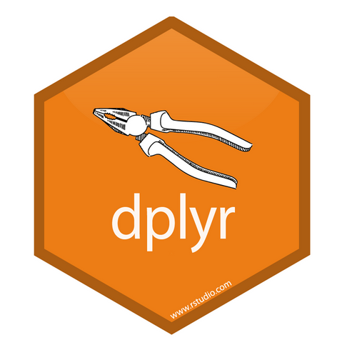

Manipulación de datos
Tidyverse
dplyr
Manipulación de datos
Transformación de datos
La manipulación y transformación de datos es una actividad medular en la ciencia de datos. En esta publicación se muestra su abordaje mediante la librería dplyr.
Introducción
Un atributo notable del lenguaje de programación , es poder disponer del gran volumen de bibliotecas especializadas en distintos aspectos del análisis de datos. En tal sentido, existe un conjunto de bibliotecas conocidas como el Tidyverse, sumamente útiles para la manipulación, visualización y modelado de datos. En esta publicación, veremos las principlaes funciones de importancia de una de las principales bibliotecas: dplyr.
Debemos primero instalar la biblioteca y luego llamarla, escribiendo el siguiente código en la consola de R:
- install.packages(“dplyr”)
- library(dplyr)
Y ahora sí, estamos listos para explorar las principales funciones de esta biblioteca.
Principales funciones de dplyr
A fin de trabajar con las principales funciones de la biblioteca, utilizaremos una biblioteca de datos sobre vuelos aéreos de la ciudad de Nueva York -entre muchas-, que viene incluida con la instalación de R. Para llamar la base de datos antes mencionada, escribimos:
- library(nycflights13)
En caso de no venir instalada por defecto, la debemos instalar al igual que se hizo con dplyr.
La biblioteca nycflights13 está conformada por cinco tablas de datos: airlines, airports, flights, planes y weather. Observemos los primeros datos de la tabla planes con la función head.
Código
head(planes)# A tibble: 6 × 9
tailnum year type manufacturer model engines seats speed engine
<chr> <int> <chr> <chr> <chr> <int> <int> <int> <chr>
1 N10156 2004 Fixed wing multi … EMBRAER EMB-… 2 55 NA Turbo…
2 N102UW 1998 Fixed wing multi … AIRBUS INDU… A320… 2 182 NA Turbo…
3 N103US 1999 Fixed wing multi … AIRBUS INDU… A320… 2 182 NA Turbo…
4 N104UW 1999 Fixed wing multi … AIRBUS INDU… A320… 2 182 NA Turbo…
5 N10575 2002 Fixed wing multi … EMBRAER EMB-… 2 55 NA Turbo…
6 N105UW 1999 Fixed wing multi … AIRBUS INDU… A320… 2 182 NA Turbo…Esta función nos permite visualizar los primeros 6 datos de un total de 9 columnas que componen la tabla. Si se quiere obtener una información más detallada de las variables y número de observaciones que componen la tabla, podemos utilizar la función str:
Código
str(planes)tibble [3,322 × 9] (S3: tbl_df/tbl/data.frame)
$ tailnum : chr [1:3322] "N10156" "N102UW" "N103US" "N104UW" ...
$ year : int [1:3322] 2004 1998 1999 1999 2002 1999 1999 1999 1999 1999 ...
$ type : chr [1:3322] "Fixed wing multi engine" "Fixed wing multi engine" "Fixed wing multi engine" "Fixed wing multi engine" ...
$ manufacturer: chr [1:3322] "EMBRAER" "AIRBUS INDUSTRIE" "AIRBUS INDUSTRIE" "AIRBUS INDUSTRIE" ...
$ model : chr [1:3322] "EMB-145XR" "A320-214" "A320-214" "A320-214" ...
$ engines : int [1:3322] 2 2 2 2 2 2 2 2 2 2 ...
$ seats : int [1:3322] 55 182 182 182 55 182 182 182 182 182 ...
$ speed : int [1:3322] NA NA NA NA NA NA NA NA NA NA ...
$ engine : chr [1:3322] "Turbo-fan" "Turbo-fan" "Turbo-fan" "Turbo-fan" ...Vemos al inicio que la tabla planes está conformada por 3322 observaciones (filas), en relación a 9 variables (columnas), entre las que tenemos: ID del ala trasera (tailnum), año, tipo de motor, fabricante, modelo, motores, asientos y velocidad. Esta primera visualización también nos aporta información sobre el tipo de variables. Por ejemplo, el ID del ala trasera es una variable caracter, en tanto que el numero de asientos es una variable numérica.
Select
Esta función permite seleccionar variables específicas de una tabla de datos. Supongamos que a partir de la tabla original, queremos formar una nueva tabla con las variables: tailnum, manufacturer y seats
Código
select(planes, tailnum, manufacturer, seats)# A tibble: 3,322 × 3
tailnum manufacturer seats
<chr> <chr> <int>
1 N10156 EMBRAER 55
2 N102UW AIRBUS INDUSTRIE 182
3 N103US AIRBUS INDUSTRIE 182
4 N104UW AIRBUS INDUSTRIE 182
5 N10575 EMBRAER 55
6 N105UW AIRBUS INDUSTRIE 182
7 N107US AIRBUS INDUSTRIE 182
8 N108UW AIRBUS INDUSTRIE 182
9 N109UW AIRBUS INDUSTRIE 182
10 N110UW AIRBUS INDUSTRIE 182
# ℹ 3,312 more rowsEl código anterior, aunque logró el objetivo, no se corresponde con la gramática utilizada en dplyr; para ello, se utiliza el operador %>%, que se lee entonces y que constituye una especie de tubería (pipe) que garantiza el flujo de código en la gramática de la biblioteca. Reescribiendo el código anterior tenemos:
Código
aviones <- planes %>%
select(tailnum, manufacturer, seats)
head(aviones)# A tibble: 6 × 3
tailnum manufacturer seats
<chr> <chr> <int>
1 N10156 EMBRAER 55
2 N102UW AIRBUS INDUSTRIE 182
3 N103US AIRBUS INDUSTRIE 182
4 N104UW AIRBUS INDUSTRIE 182
5 N10575 EMBRAER 55
6 N105UW AIRBUS INDUSTRIE 182Filter
La función filter, permite filtrar las filas de la tabla en base a algún criterio específico. Supongamos que estamos interesados en los datos del fabricante AIRBUS INDUSTRIE:
Código
manufacturer <- aviones %>%
filter(manufacturer == "AIRBUS INDUSTRIE")
head(manufacturer)# A tibble: 6 × 3
tailnum manufacturer seats
<chr> <chr> <int>
1 N102UW AIRBUS INDUSTRIE 182
2 N103US AIRBUS INDUSTRIE 182
3 N104UW AIRBUS INDUSTRIE 182
4 N105UW AIRBUS INDUSTRIE 182
5 N107US AIRBUS INDUSTRIE 182
6 N108UW AIRBUS INDUSTRIE 182Si deseamos filtrar los datos de manera de seleccionar de la tabla original, el número de cola, fabricante y asientos; y específicamente aquellos aviones con más de 200 asientos del fabricante AIRBUS INDUSTRIE tenemos:
Código
aviones <- planes %>%
select(tailnum, manufacturer, seats) %>%
filter(manufacturer == "AIRBUS INDUSTRIE" & seats > 200)
head(aviones)# A tibble: 4 × 3
tailnum manufacturer seats
<chr> <chr> <int>
1 N281AT AIRBUS INDUSTRIE 375
2 N572UW AIRBUS INDUSTRIE 379
3 N851NW AIRBUS INDUSTRIE 379
4 N907JB AIRBUS INDUSTRIE 379Noten el uso del caracter & para establecer la condición AND. De igual forma, el caracter | se utiliza para la condición OR. Por ejemplo:
Código
aviones <- planes %>%
select(tailnum, manufacturer, seats) %>%
filter(manufacturer == "AIRBUS INDUSTRIE" | seats <= 200 )
head(aviones)# A tibble: 6 × 3
tailnum manufacturer seats
<chr> <chr> <int>
1 N10156 EMBRAER 55
2 N102UW AIRBUS INDUSTRIE 182
3 N103US AIRBUS INDUSTRIE 182
4 N104UW AIRBUS INDUSTRIE 182
5 N10575 EMBRAER 55
6 N105UW AIRBUS INDUSTRIE 182Observen que al establecer la condición OR, el código ha incluido al fabricante EMBRAER porque produce aviones con menos de 200 asientos.
Between
Esta función se utiliza en combinación con filter para seleccionar las filas que se encuentren entre dos condiciones límite. Por ejemplo, si queremos seleccionar los aviones que tengan entre 50 y 100 asientos:
Código
aviones <- planes %>%
select(tailnum, manufacturer, seats) %>%
filter(between(seats,50,100))
str(aviones)tibble [698 × 3] (S3: tbl_df/tbl/data.frame)
$ tailnum : chr [1:698] "N10156" "N10575" "N11106" "N11107" ...
$ manufacturer: chr [1:698] "EMBRAER" "EMBRAER" "EMBRAER" "EMBRAER" ...
$ seats : int [1:698] 55 55 55 55 55 55 55 55 55 55 ...Observen que hay 698 aviones que cumplen con la condición establecida.
Slice
Esta función devuelve filas específicas de la tabla de datos. Por ejemplo, supongamos que estamos interesados en las dos primeras filas de la tabla original de datos
Código
aviones <- planes %>%
select(tailnum, manufacturer, seats) %>%
slice(1,2)
aviones# A tibble: 2 × 3
tailnum manufacturer seats
<chr> <chr> <int>
1 N10156 EMBRAER 55
2 N102UW AIRBUS INDUSTRIE 182Mutate
Esta es una función de gran utilidad, ya que nos permite incorporar nuevas variables o modificar variables existentes en una tabla de datos. Consideremos una tabla con el peso (kg) y talla (m) de cinco personas:
Código
peso <- c(65,78,86,75,81)
talla <- c(1.70,1.72,1.67,1.80,1.78)
datos <- data.frame(peso,talla)
datos peso talla
1 65 1.70
2 78 1.72
3 86 1.67
4 75 1.80
5 81 1.78Supongamos que queremos incorporar una tercera variable, el índice de masa corporal (IMC):
Código
datos <- datos %>%
mutate(IMC = peso/(talla)^2)
datos peso talla IMC
1 65 1.70 22.49135
2 78 1.72 26.36560
3 86 1.67 30.83653
4 75 1.80 23.14815
5 81 1.78 25.56495Aprovechando la nueva tabla que se ha generado, utilizaremos la función mutate en conjunto con la función if_else de dplyr:
Código
resultado <- datos %>%
mutate(DX = if_else(IMC > 25,"sobrepeso","normopeso"))
resultado peso talla IMC DX
1 65 1.70 22.49135 normopeso
2 78 1.72 26.36560 sobrepeso
3 86 1.67 30.83653 sobrepeso
4 75 1.80 23.14815 normopeso
5 81 1.78 25.56495 sobrepesoArrange
Esta función permite ordenar la tabla de datos en función de una variable. Por ejemplo, apartir de la tabla original, construyamos una tabla con las variables: tailnum, year y model y oredenemos la nueva tabla en función del año
Código
aviones <- planes %>%
select(year, tailnum, model) %>%
arrange(year)
head(aviones)# A tibble: 6 × 3
year tailnum model
<int> <chr> <chr>
1 1956 N381AA DC-7BF
2 1959 N201AA 150
3 1959 N567AA OTTER DHC-3
4 1963 N378AA 172E
5 1963 N575AA 210-5(205)
6 1965 N14629 737-524 Y si lo requerimos en orden descendente:
Código
aviones <- planes %>%
select(year, tailnum, model) %>%
arrange(desc(year))
head(aviones)# A tibble: 6 × 3
year tailnum model
<int> <chr> <chr>
1 2013 N150UW A321-211
2 2013 N151UW A321-211
3 2013 N152UW A321-211
4 2013 N153UW A321-211
5 2013 N154UW A321-211
6 2013 N155UW A321-211Group_by y summarise
Estas son, quizá, las funciones más importantes de la biblioteca dplyr, ya que nos permiten ejecutar operaciones en un sub-grupo del data frame sin necesidad de extraer el sub-grupo. A partir de planes, agruparemos los datos por fabricante y calcularemos el promedio de asientos en los aviones de cada uno:
Código
df <- planes %>%
group_by(manufacturer) %>%
summarise(Media = mean(seats))
head(df)# A tibble: 6 × 2
manufacturer Media
<chr> <dbl>
1 AGUSTA SPA 8
2 AIRBUS 221.
3 AIRBUS INDUSTRIE 187.
4 AMERICAN AIRCRAFT INC 2
5 AVIAT AIRCRAFT INC 2
6 AVIONS MARCEL DASSAULT 12 Si retomamos el dataframe de peso y talla que elaboramos más arriba, añadimos otros datos e incorporamos la variable sexo:
Código
sexo <- c("Mujer","Hombre","Hombre","Mujer", "Mujer","Hombre","Mujer")
peso <- c(65,78,86,71,81,90,63.2)
talla <- c(1.70,1.72,1.67,1.80,1.78,1.75,1.70)
datos <- data.frame(sexo, talla, peso)
datos sexo talla peso
1 Mujer 1.70 65.0
2 Hombre 1.72 78.0
3 Hombre 1.67 86.0
4 Mujer 1.80 71.0
5 Mujer 1.78 81.0
6 Hombre 1.75 90.0
7 Mujer 1.70 63.2Podríamos agrupar los datos por sexo y calcular la media y la mediana en cada grupo:
Código
datos %>%
group_by(sexo)%>%
summarise(Media = mean(peso), Mediana = median(peso))# A tibble: 2 × 3
sexo Media Mediana
<chr> <dbl> <dbl>
1 Hombre 84.7 86
2 Mujer 70.0 68